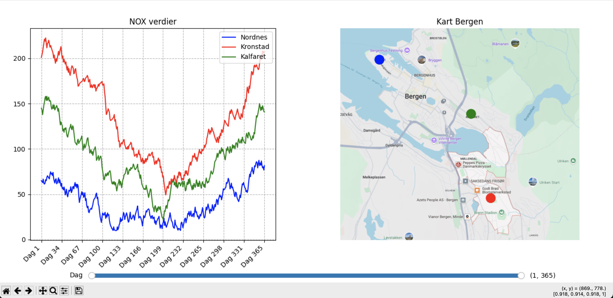
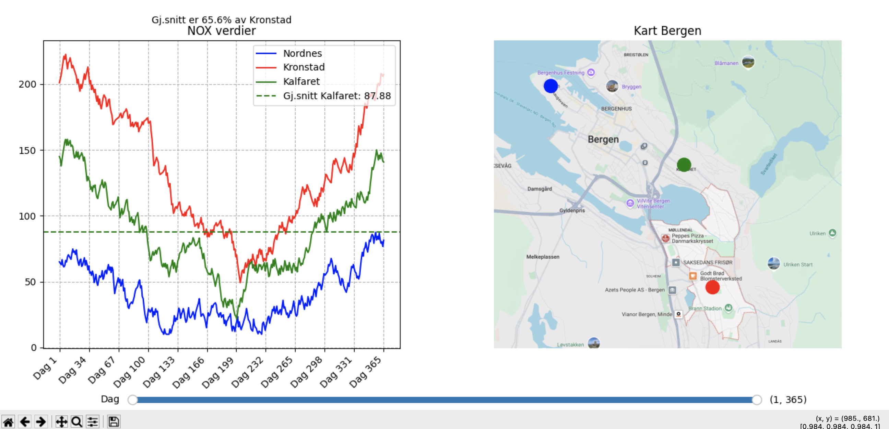
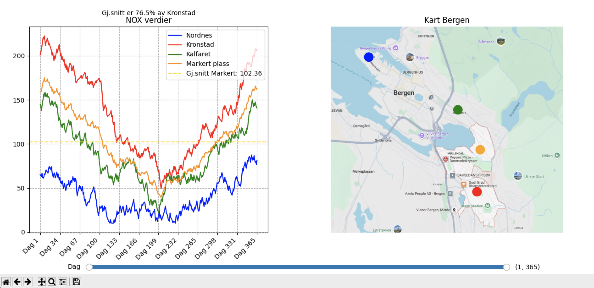

Som en del av prosjektet HVLtopia har vi laget et program hvor man kan observere luftforurensningen i bergen og hvordan den endrer seg fra dag til dag.
Når en åpner programmet vises et kart av Bergen med tre viktige punkter markert, Nordnes, Kronstad og Kalfaret, og en graf som viser endringene i nitrogenoksider (NOx) i luften i disse områdene.
Ved å trykke på et av disse punktene kan du se gjennomsnittlig luftforurensning av nitrogenoksider i området, og hvordan det sammenligner med Kronstad.
Man kan også trykke på et vilkårlig punkt for å vise mengden nitrokenoksider i luften og hvordan det sammenligner med Kronstad.